Participant 1
Initial description: The cells with the inner color that were outside the inner rectangle moved to the outer edge of the outer rectangle and extended to the edge of the grid horizontally and vertically. The lines of the same axes were turned the color of the outer rectangle inside the inner rectangle.
Final description: The cells with the inner color that were outside the inner rectangle moved to the outer edge of the outer rectangle and extended to the edge of the grid horizontally and vertically. The lines of the same axes were turned the color of the outer rectangle inside the inner rectangle.

Participant 2
Initial description: My thoughts were to extend the single blocks all the way to the end and then change the color inside the block back to the color of the main larger block.
Final description: My solution was to make sure that the individual blocks were extended out all the way to the end. I had to change the colors which were in the main block to the same color as the larger block.
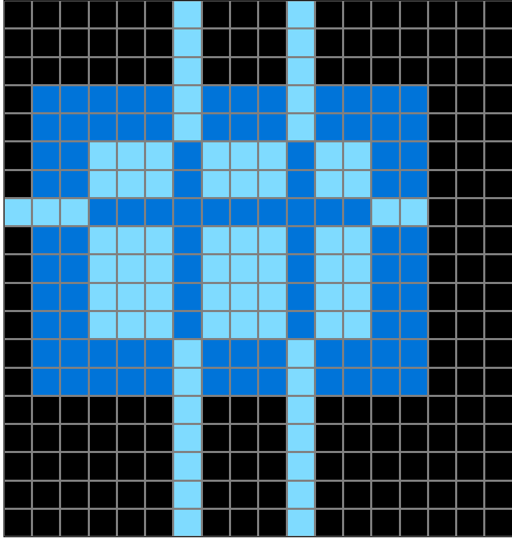
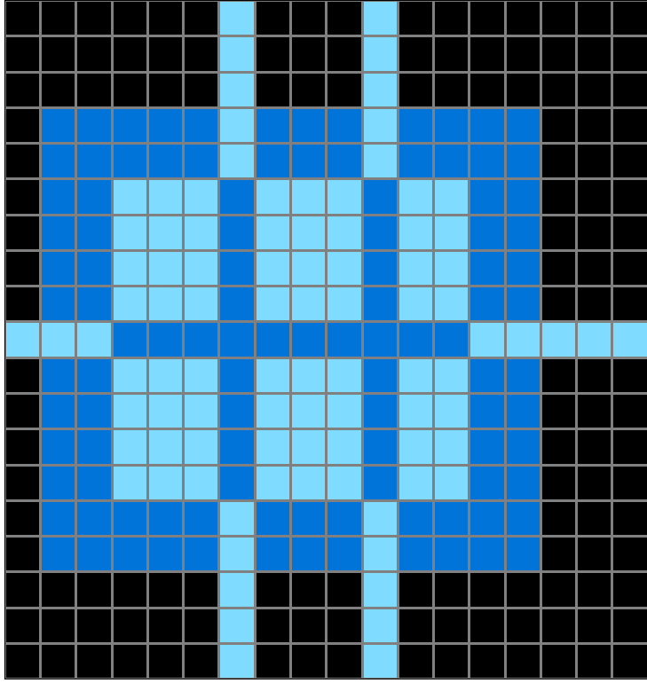

Participant 3
Initial description: The input is one rectangle within another (surrounded by black space). There are protrusions of the inner rectangle which serve to mark rows and columns. Extend those rows and columns into the black area to the edge using the interior color. Extend them into the inner rectangle using the color of the outer rectangle. Finally remove the row/column markers.
Final description: The input is one rectangle within another (surrounded by black space). There are protrusions of the inner rectangle which serve to mark rows and columns. Extend those rows and columns into the black area to the edge using the interior color. Extend them into the inner rectangle using the color of the outer rectangle. Finally remove the row/column markers.

Participant 4
Initial description: some hard
Final description: some hard

Participant 5
Initial description: The grid size stayed the same. The light blue points outside the inner area were used as guides to draw lines horizontal and vertical.
Final description: The grid size stayed the same. The lighter colored stray blocks outside the inner square were used as a guide for lines going horizontal and vertical.
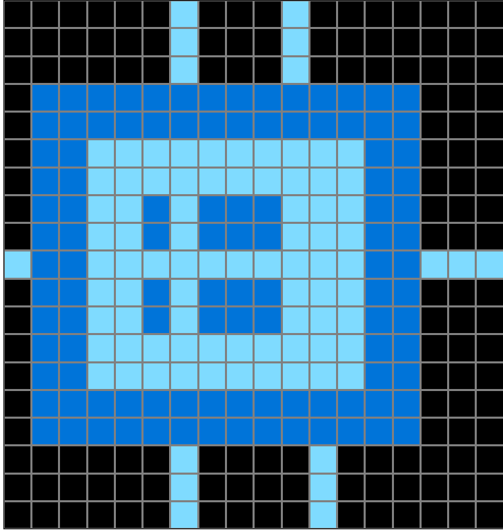
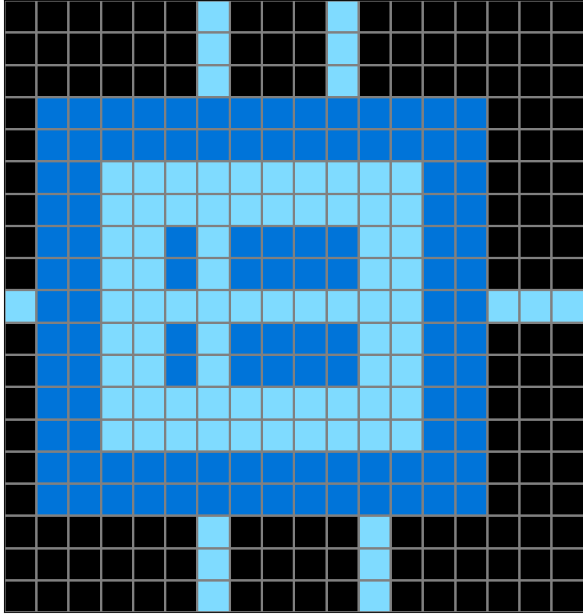
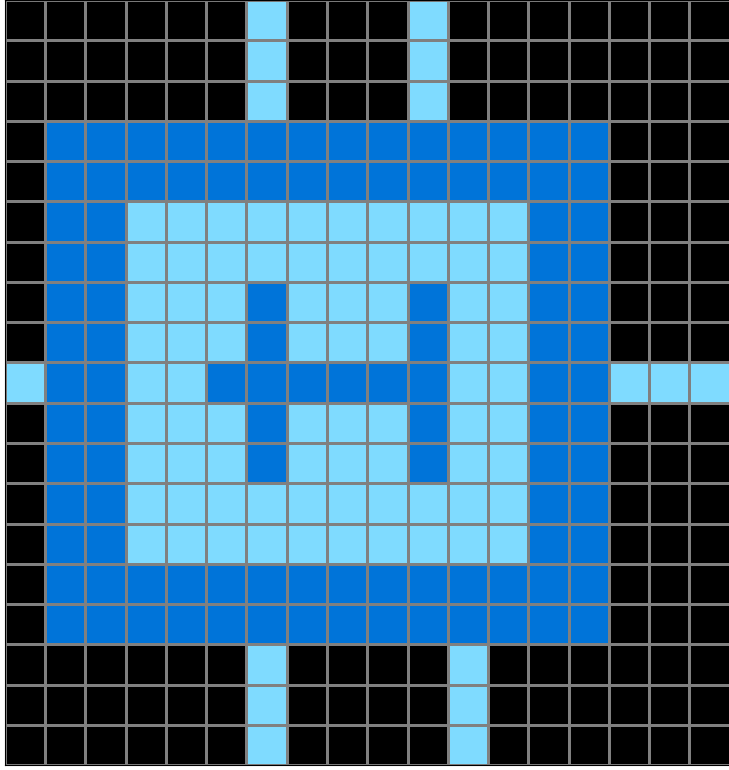
Participant 6
Initial description: Use the block(s) outside the inner square to fill in the rest of the rows and columns outside of the outer square. Color inside rows and columns the color of the outer square in the inner square rows and columns
Final description: Use the block(s) outside the inner square to fill in the rest of the rows and columns outside of the outer square. Color inside rows and columns the color of the outer square in the inner square rows and columns

Participant 7
Initial description: Fill all sides black and two squares of red.
Final description: I thought the rule was to fill most of it out black and then identify where changes needed to be made.
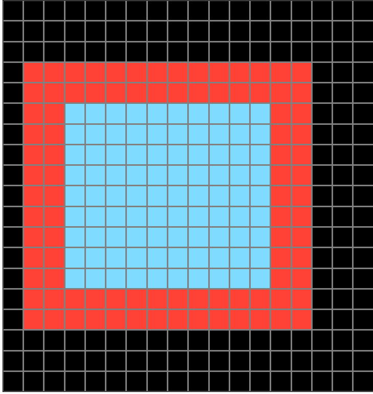
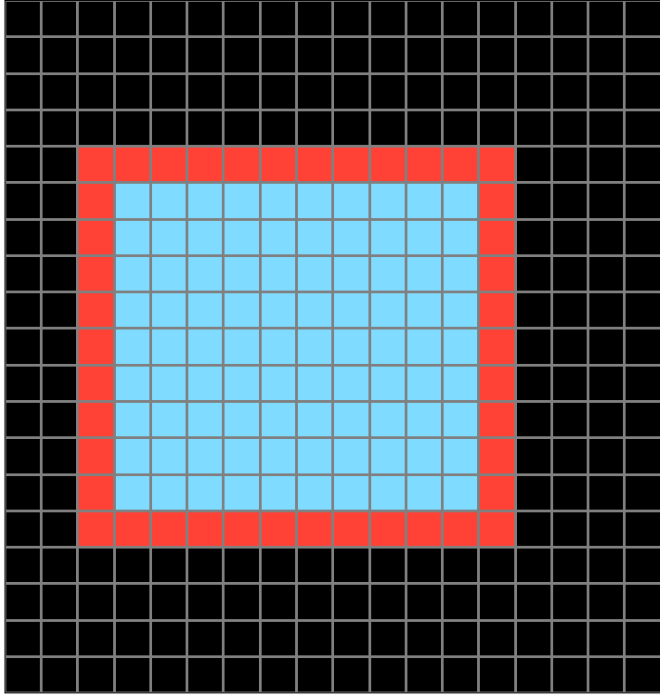
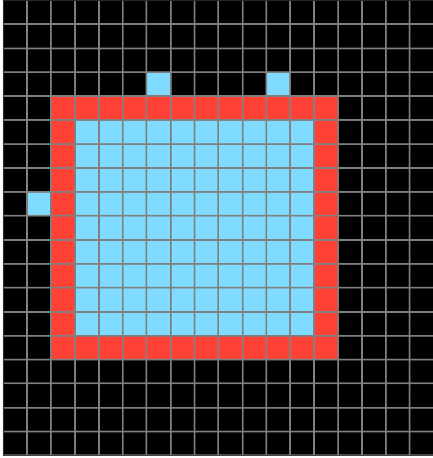
Participant 8
Initial description: I took off the outliers inside the border and then extended that color outside the border.
Final description: Change the color of the outliers and then on the outside of the border extend the color removed to the ends of the grid. Change where they would be in the area within the border to the color of the border. (Where they would be if you extended the lines all the way across.)
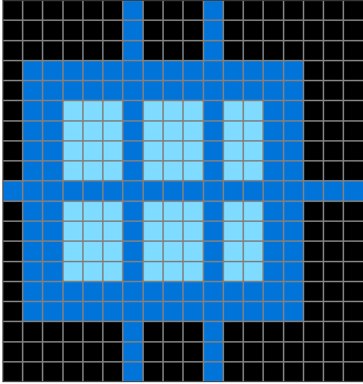

Participant 9
Initial description: Strike through the grid starting from the blocks that protrudes with a single square. However, the strike through in the center should still be the same color as the original.
Final description: Strike through the grid starting from the blocks that protrudes with a single square. However, the strike through in the center should still be the the color of dark blue.
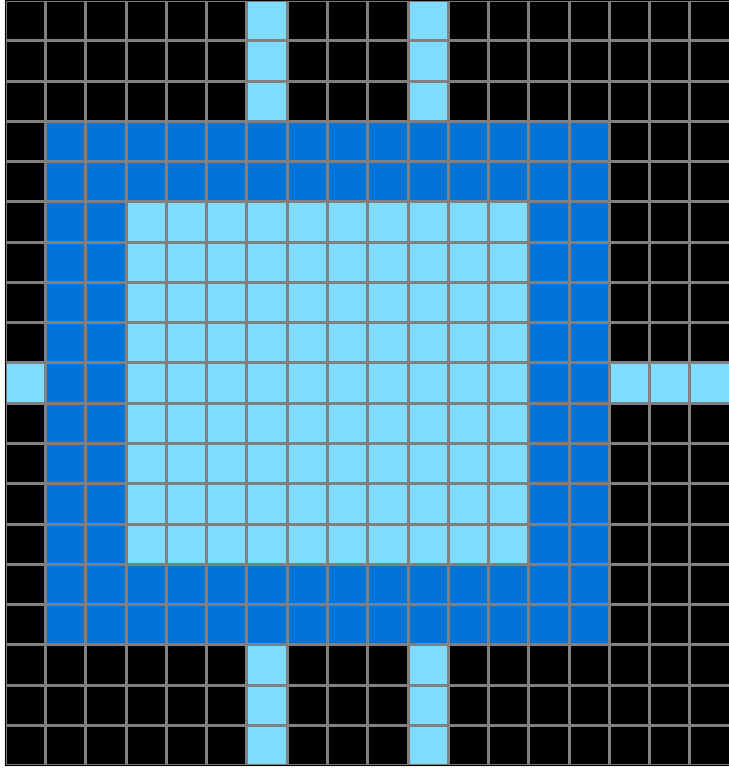

Participant 10
Initial description: The single outlying squares inside the larger square get lines across the back of the output, while the darker color crosses the square at the points of the single outliers.
Final description: The single outlying squares inside the larger square get lines across the back of the output, while the darker color crosses the square at the points of the single outliers.

Participant 11
Initial description: tried to copy examples
Final description: Tried to follow examples
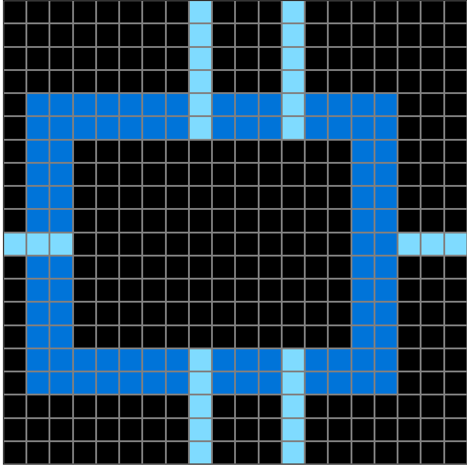
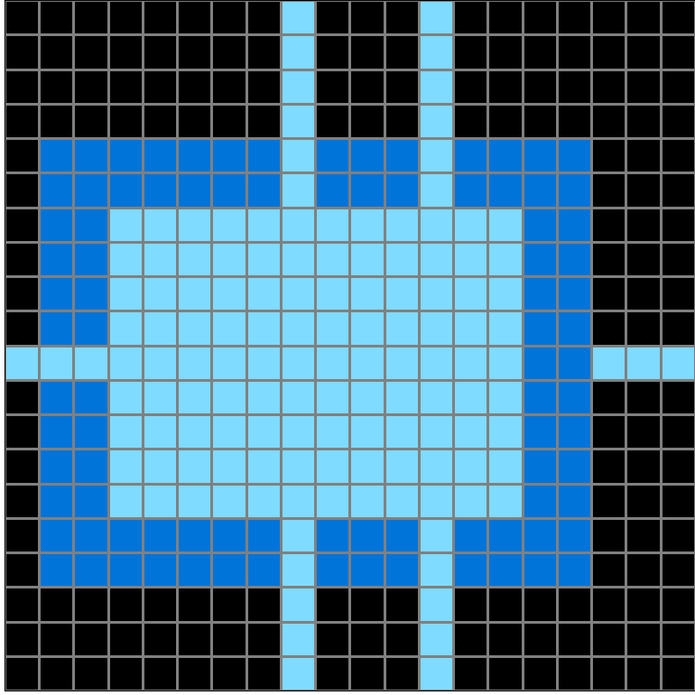
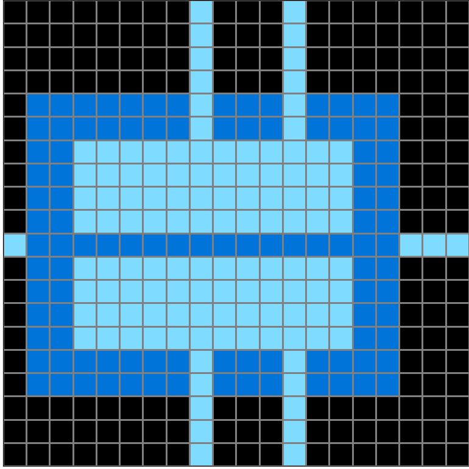
Participant 12
Initial description: GOOD
Final description: OKAY

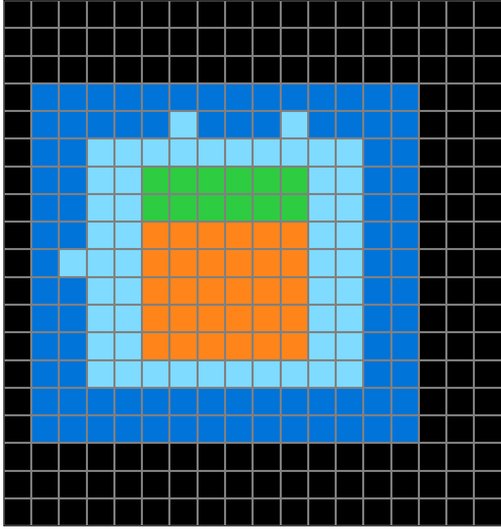

Participant 13
Initial description: the frame remains the same size however where the gaps are this indicates a colored portion of the grid. on the inside the lines will reflect the same color as the frame and the outside lines will be the fill color but extend to the edge of the grid.
Final description: the frame remains the same size however where the gaps are this indicates a colored portion of the grid. on the inside the lines will reflect the same color as the frame and the outside lines will be the fill color but extend to the edge of the grid.

Participant 14
Initial description: Copy the test input image then extend the small colored squares
Final description: Copy the test input. Focusing on the protruding colors from the inside fill those colors in a line outward from the main shape. Then take the outer colored border and form lines in the inner part.
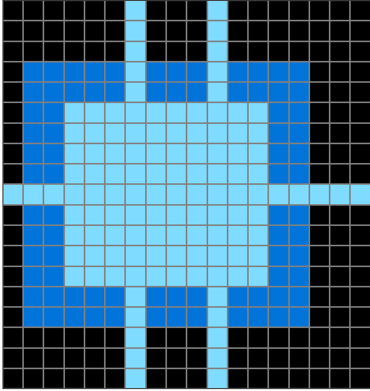

Participant 15
Initial description: cross all the layer where the block comes out with thick blue
Final description: cross out the layer that are not align with light blue and the dark layer path with light blue
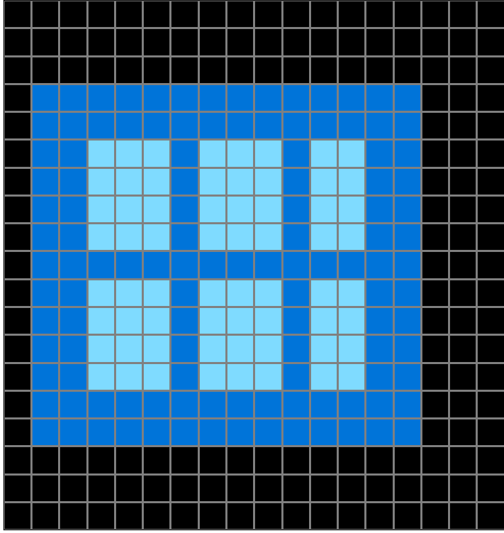

Participant 16
Initial description: if there is an extra square outside, depending on if it's on the sides, top or bottom, you would fill the outside. remove the extra squares.
Final description: if there is an extra square outside, depending on if it's on the sides, top or bottom, you would fill the outside. remove the extra squares.

Participant 17
Initial description: The tiles on the the inner shape that extruded out vertically were used to draw extended vertical lines behind the larger shape using the same X positions. Likewise, the horizontally extruded bumps of the inner shape were used to draw extended horizontal lines behind the larger shape using the same Y positions. The bumps on the inner shape that extruded vertically then were removed and used to erase vertical lines from the inner shape sharing the same X positions. Likewise for the bumps on the inner shape that extruded horizontally with their Y positions.
Final description: The tiles on the the inner shape that extruded out vertically were used to draw extended vertical lines behind the larger shape using the same X positions. Likewise, the horizontally extruded bumps of the inner shape were used to draw extended horizontal lines behind the larger shape using the same Y positions. The bumps on the inner shape that extruded vertically then were removed and used to erase vertical lines from the inner shape sharing the same X positions. Likewise for the bumps on the inner shape that extruded horizontally with their Y positions.
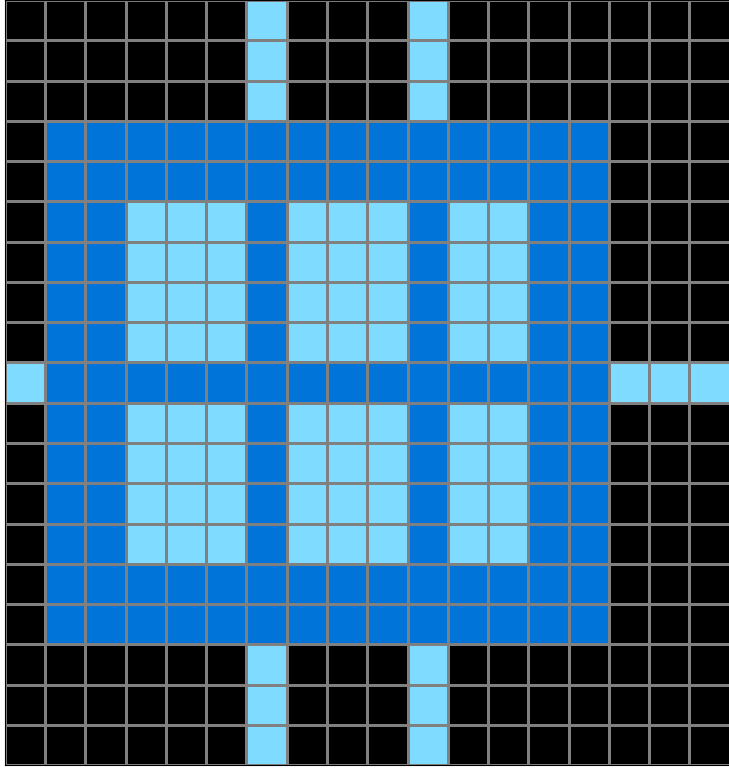
Participant 18
Initial description: Create perpendicular lines across the bigger shape by finding the small parts that break the lines of the shape. Use the center color to extend the line beyond the main shape, and use the outline color to extend the line within the main shape.
Final description: Create perpendicular lines across the bigger shape by finding the small parts that break the lines of the shape. Use the center color to extend the line beyond the main shape, and use the outline color to extend the line within the main shape.